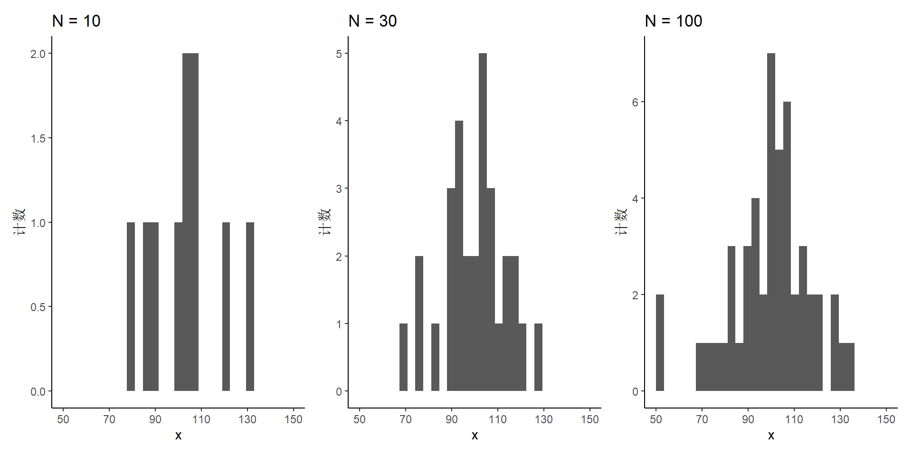
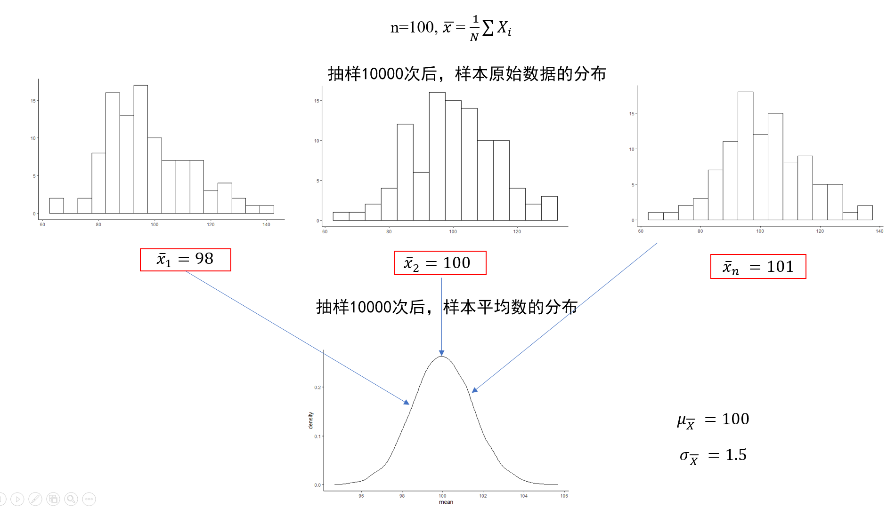
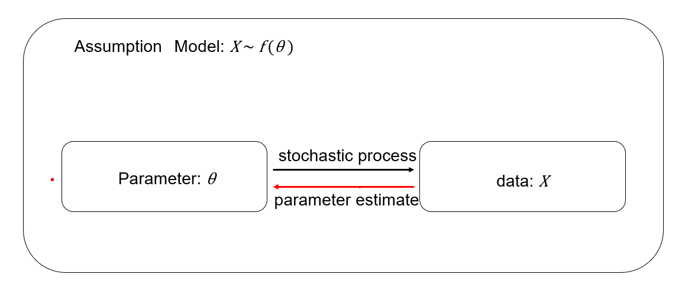
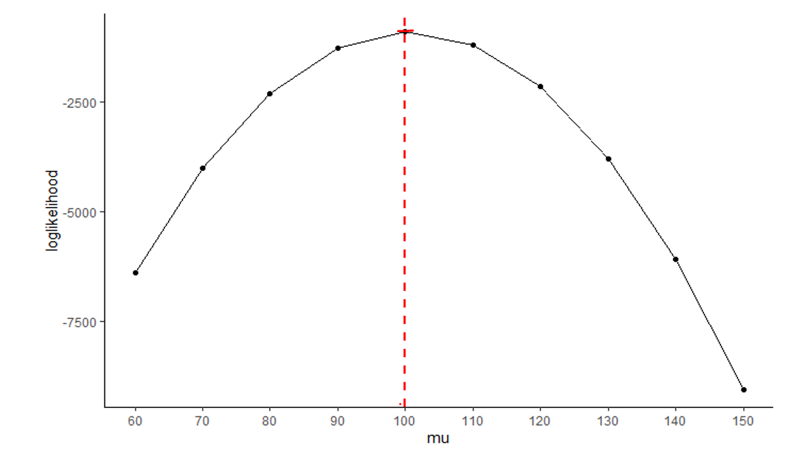
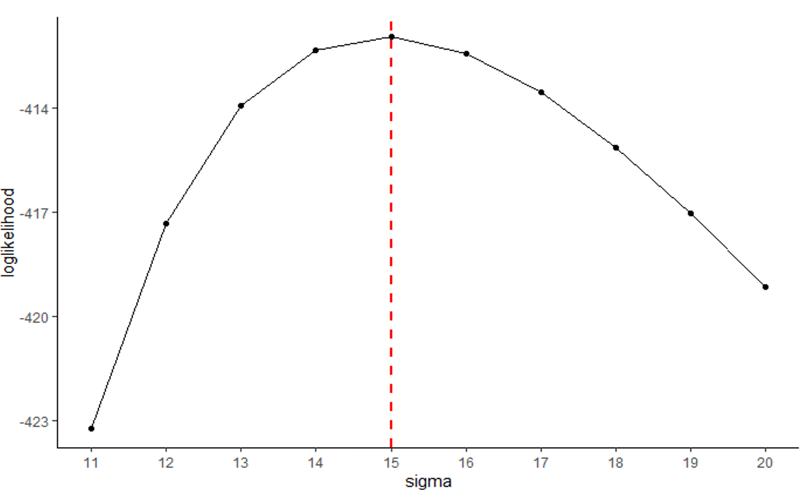
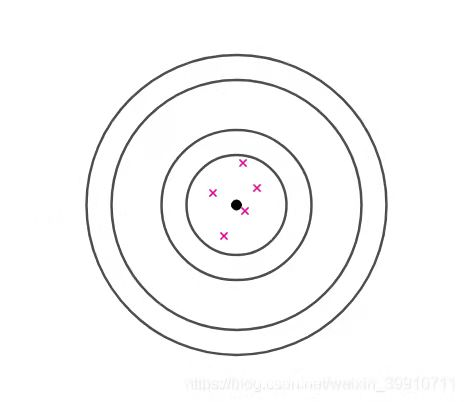
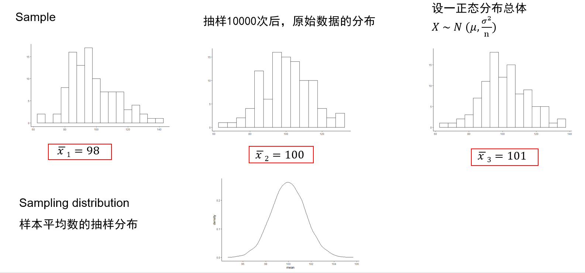
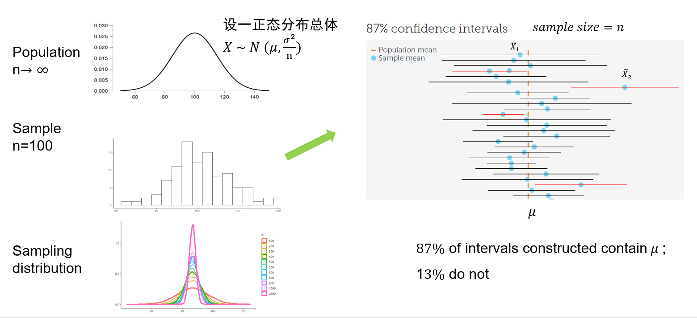
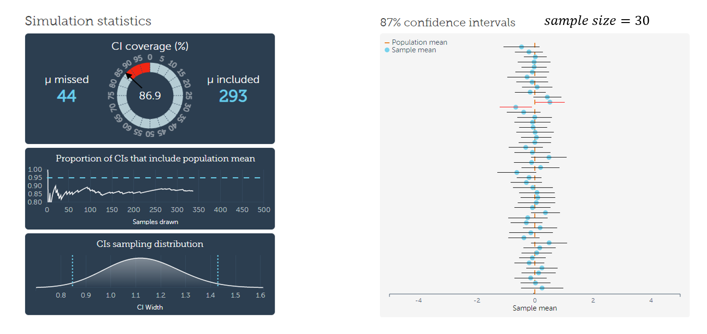
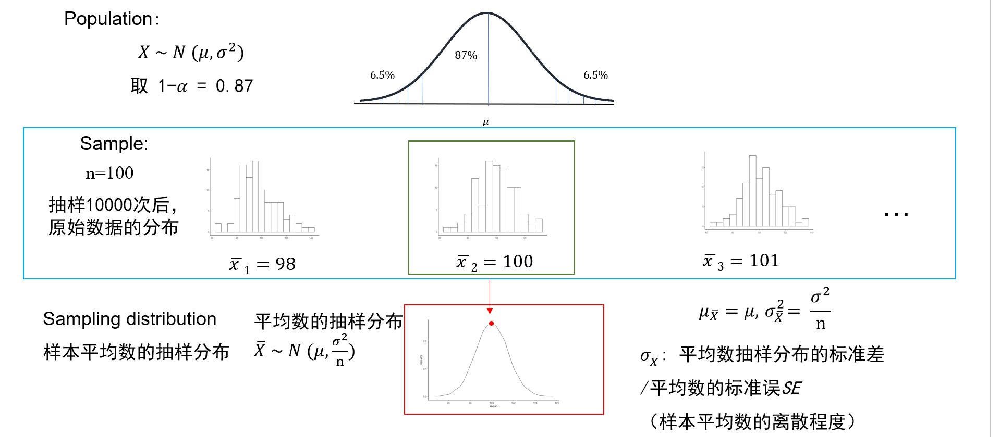

08 - 参数估计 1
(Parameter estimation 1)
Hu Chuan-Peng
2023-04-19
review
正态分布
z分布
z分数的应用
抽样分布(Sampling distribution)

(https://medium.com/analytics-vidhya/population-sample-parameter-statistic-biased-unbiased-ead2021d93d7)
统计量(Statistics)&参数(Parameters)
统计量：
从样本中计算出的某种特征值，如样本均值，样本方差等；
统计量通常用小写字母表示，例如样本均值用 \(\bar{x}\) 表示，样本方差用 \(s^2\) 表示。
参数：
参数是指总体的某种未知特征值，如总体均值、总体方差等；
参数通常用希腊字母表示，例如总体均值用 \(\mu\) 表示，总体方差用 \(\sigma^2\) 表示。
统计量与参数的例子
| 统计量 | 参数 |
|---|---|
| 南京师范大学心理学院22级本科生的心理统计学的挂科率 | 大学本科生的挂科率 |
| 南京师范大学心理学院22级本科生的平均身高 | 人的平均身高 |
| 南京师范大学心理学院22级本科生的手机使用时间 | 大学生每天的手机使用时间 |
统计量与参数的符号表示
| 统计指标 | 统计量 | 参数 |
|---|---|---|
| 平均数 | \(\bar{x}\) | \(\mu\) |
| 标准差 | \(s\) | \(\sigma\) |
| 方差 | \(s^2\) | \[ \sigma^2 \] |
| 相关系数 | \(r\) | \(\rho\) |
| 回归系数 | \(b\) | \(\beta\) |
统计量与参数之间的区别
这个数字是否描述了一个完整的群体，其中每个成员的数据都能够被收集？
是否有可能在合理的时间范围内从总体每个成员中收集有关这一特征的数据？
抽样分布
一个统计量的抽样分布是指从大小为𝑛的随机样本中得出的该统计量的分布，被视为一个随机变量。
它可以被认为是在给定的样本量下，从同一人群中抽取的所有可能的样本的统计量分布。
样本统计量的概率分布，如果用字母 𝑋 指代某一统计量，抽样分布就是指 𝑋 的概率分布，即样本统计量的概率分布
从X~N(100,15)抽取样100个样本形成的样本分布
当样本量为100时，样本量的分布与总体分布的形状大致相似
从X~N(100,15)抽取样10, 30, 50个样本形成的样本分布
当样本量很小时，分布形状和总体分布相差很大
回顾：中心极限定理
不管原始分布是何种形式，样本均值的分布都接近于正态分布。

从X~N(100,15^2)抽取样100个样本，重复这个过程10000次形成的抽样分布

标准误
抽样误差/标准误差/标准误：样本统计量的标准差，其反映了抽样过程中随机误差的大小，此类标准差反映的是样本统计量之间的差异性，也即称某种统计量抽样分布的标准差为该种统计量的标准误。
标准误越小，表明抽样误差越小，用该样本统计量来估计或推断相应总体参数的可靠性就越高。如果使用的样本统计量为样本平均数，则称其为样本平均数的标准误(SEM)。
标准差(Standard deviance) : 样本数值的变异
标准误 (Standard error) : 抽样分布的标准差
参数估计(Parameter estimation)
参数估计 (Parameter estimation)
待估参数：在参数估计中要估计的能够总体参数，可以是平均数，方差或者其他参数，可统一用𝜃来表示。
估计量：用来估计参数的样本统计量，如平均数，中位数，标准差，可统一用\(\hat{\theta}\)来表示。
参数估计：设总体参数𝜃，根据总体的一个随机样本（𝑋_1,𝑋_2, 𝑋_3 ,…, 𝑋_n ）计算出统计量\(\hat{\theta}\)s ，当作估计量，利用其去估计总体参数。参数估计有两种方式，即点估计与区间估计。
模型
X ~ N (μ, \(𝜎^2\))
\(L(\theta \mid X) = \prod_{k=1}^n P(X_k \mid \theta)\)
\(L(\mu, \sigma^2 \mid X) = \prod_{k=1}^n P(X_k \mid \mu, \sigma^2)\)
数值上的等式L (θ ∣x ) =p (X = x | θ ) :
Likelihood(似然）
给定数据 X， θ 成立的概率。
| p | 0.1 | 0.2 | 0.3 | 0.4 | 0.5 | 0.6 | 0.7 | 0.8 | 0.9 |
|---|---|---|---|---|---|---|---|---|---|
| P (k = 3 | n, p) (n = 10) |
0.057 | 0.201 | 0.267 | 0.214 | 0.117 | 0.042 | 0.009 | 0.001 | 0.000 |
\(Log L (μ | X, σ^2)\)
\(Log L(σ|X, μ)\)
𝑥̅是 𝜇 的最佳估计值。
\(s_{n-1}\) 是𝜎的最佳估计值。
思考
当总体分布情况未知，我们应该怎么处理？
点估计和区间估计(Point estimation & interval estimation)
点估计（Point estimation）
点估计（Point estimation）
- 利用样本统计量作为相应总体参数的估计值，样本统计量 \(\hat{\theta}\) 是总体参数 𝜃 的点估计。
- 用一个特定样本对总体未知参数所做的估计，仅为所有可能估计值中的一个点。
如何选取总体参数𝜃的估计量\(\hat{\theta}\)?
极大似然法（Maximum Likelihood Estimate）
- 总体二项分布， X ~ B (𝑛, 𝑝)
- 求总体 𝑃 的最佳估计量。
| p | 0.1 | 0.2 | 0.3 | 0.4 | 0.5 | 0.6 | 0.7 | 0.8 | 0.9 |
|---|---|---|---|---|---|---|---|---|---|
| P (k = 3 | n, p) (n = 10) |
0.057 | 0.201 | 0.267 | 0.214 | 0.117 | 0.042 | 0.009 | 0.001 | 0.000 |
- 总体二项分布， X ~ B (𝑛, 𝑝)
- 总体正态分布， X ~ N (μ , \(σ^2\))
- 求总体 μ 的最佳估计量
- 总体正态分布， X ~ N (μ , \(σ^2\))
- 求总体 σ 的最佳估计量
如何比较各估计量 \(\hat{\theta}\) ，选取最佳估计量？
点估计的特性 (Properties)
无偏性:
- \(\hat{\theta}\) = \(\hat{\theta}\) (\(𝑋_1,𝑋_2,..,𝑋_𝑛\))是随机变量，每次抽样估计值与真值间误差为 \(\hat{\theta}\) - \(\theta\)，如果作为估计量的统计量，其抽样分布的平均数实际上等于待估参数时，那么这个估计量就是待估参数的无偏估计量，即𝐸(\(\hat{\theta}\)̂)=\({\theta}\) ,也就是𝐸(\(\hat{\theta}\) - 𝜃) =0，则称\(\hat{\theta}\) 为 𝜃 的无偏估计量。


- 抽样估计值间离散程度为 \({\theta}^2_{\hat{\sigma}} = \frac{1}{n} \sum(\hat{\theta}i - \mu_{\theta})^2\)
点估计的特性 (Properties)
有效性 :
- 如果某一参数的一个无偏估计量的方差与该参数的所有其他无偏估计量相比为最小，那么该估计量就可称为最有效估计量或最佳无偏估计量。如果\({\sigma}_{\hat{\theta}_1}\)<\({\sigma}_{\hat{\theta}_2}\)，则称\({\sigma}_{\hat{\theta}_1}\)比\({\sigma}_{\hat{\theta}_2}\)为更有效的估计量。
点估计的特性 (Properties)
一致性：
当样本容量逐渐增大时，这个估计量就越来越接近总体参数。即当设
\(\hat{\theta}\)为待估参数 𝜃 的无偏估计量，若𝑛→ ∞，\(\hat{\theta}\)收敛于 𝜃 即\(\lim_{n \to \infty} \hat{\theta}\) =𝜃,可称\(\hat{\theta}\)为𝜃的一致估计量。 𝑛越大，\(𝜎_\hat{\theta}\) 越小
充分性：
- 如果一个估计量充分地利用了样本提供的所有与待估参数有关的信息，那么该估计量就被称为充分估计量。 例如，样本平均数就是总体平均数的充分估计量，因为样本所有的观察值（\(𝑋_1,𝑋_2, 𝑋_3 ,…, 𝑋_n\)）都要参加样本平均数的计算。相比之下，样本中位数就不是一个充分的估计量，因为它的计算过程中没有利用到所有的观察值。
局限性 (Limitations of point estimation)
- 1.用样本的估计量的某个取值直接作为总体参数的估计值。
- 2.无法给出估计值接近总体参数程度的信息。
- 重复抽样情况下，点估计的均值可能等于总体真值，但抽出的一个随机样本所得到的的估计值很可能不同于总体真值。
- 一个点估计量的可靠性由抽样标准误衡量，具体的单一点估计值无法提供可靠性。
区间估计（Interval estimation）
区间估计
- 区间估计是从点估计值和抽样标准误差出发，以点估计值\(\hat{\theta}\)为基础,按给定的概率值建立可能包含待估计参数的区间，并提供总体参数值” θ “落入该区间内的概率。
置信度 / 置信水平(confidence level）
构造置信区间时，给定的概率值 𝛼 代表估计时犯错误的概率（即总体参数不在置信区间的概率), 是一个小概率，一般取”0.05”或” 0.01 ” 。
1− 𝛼 ，被称为置信度或置信水平(confidence level），指总体参数值 θ 落在样本统计值所构造的置信区间内的概率。置信度越大，需要的置信区间就越大。
置信区间 (confidence interval ) :
- 以点估计值 \(\hat{\theta}\) 为基础建立起来的可能包含待估计参数的区间称为置信区间（confidence interval），而置信区间{\(\hat{\theta}_1\),\(\hat{\theta}_2\)}是指在某一置信水平下，样本统计值与总体参数值间误差范围。置信区间越大，置信水平越高。 若进行100次抽样，每次样本容量为 n，利用1− 𝛼 构造100个置信区间，则有接近100(1- 𝛼)% 个估计的置信区间包含总体参数θ ，（即以100(1- 𝛼)% 的概率包含θ ）。
- 划定置信区间的两个数值分别称为置信下限\(\hat{\theta}_1\)(lower confidence limit , lcl）和置信上限\(\hat{\theta}_2\) (upper confidence limit , ucl)。
区间估计(Interval estimation)
区间估计(Interval estimation)
区间估计(Interval estimation)
小练习：
随意改变置信度 (confidence level) 和样本容量n
总体正态且总体方差已知时的区间估计
区间估计(Interval estimation)
- 设一正态分布总体𝑋 ~ 𝑁 (𝜇,𝜎^2) 取 1-𝛼 = 0.87
区间估计(Interval estimation)
区间估计(Interval estimation)
总体正态且总体方差已知时的区间估计
样本统计量的标准误𝑆𝐸=𝜎/√𝑛
\(Z = \frac{\bar{X} - \mu}{\frac{\sigma}{\sqrt{n}}}\)
\(P\left(\bar{X} - Z_{\frac{\alpha}{2}} \frac{\sigma}{\sqrt{n}} < \mu < \bar{X} + Z_{\frac{\alpha}{2}} \frac{\sigma}{\sqrt{n}}\right) = 1 - \alpha\)
总体正态但总体方差未知时的区间估计
区间估计(Interval estimation)
样本量足够大
用样本标准差\(𝑆_{n-1}\)作为总体参数𝜎的估计值
标准误𝑆𝐸=\(\frac{S_{n-1}}{\sqrt{n}}\)
- \(P\left(\bar{X} - Z_{\frac{\alpha}{2}} \frac{S_{n-1}}{\sqrt{n}} < \mu < \bar{X} + Z_{\frac{\alpha}{2}} \frac{S_{n-1}}{\sqrt{n}}\right) = 1 - \alpha\)
总体非正态的区间估计
区间估计(Interval estimation)
总体非正态但总体方差已知时的区间估计
样本量足够大
样本统计量的标准误𝑆𝐸=𝜎/√𝑛
- \(P\left(\bar{X} - Z_{\frac{\alpha}{2}} \frac{\sigma}{\sqrt{n}} < \mu < \bar{X} + Z_{\frac{\alpha}{2}} \frac{\sigma}{\sqrt{n}}\right) = 1 - \alpha\)
区间估计(Interval estimation)
总体非正态且总体方差未知时的区间估计
样本量足够大
用样本标准差\(𝑆_{n-1}\)作为总体参数𝜎的估计值
标准误𝑆𝐸=\(\frac{S_{n-1}}{\sqrt{n}}\)
- \(P\left(\bar{X} - Z_{\frac{\alpha}{2}} \frac{S_{n-1}}{\sqrt{n}} < \mu < \bar{X} + Z_{\frac{\alpha}{2}} \frac{S_{n-1}}{\sqrt{n}}\right) = 1 - \alpha\)
反思
总体非正态的情况下，采用的是其他的统计量（非平均数）估计总体，其他模型存在相应的参数，这个参数是否还能被称为方差？如果不能，又该如何描述这个参数？
本章小结(Summary)
抽样分布
统计量与参数
平均数的抽样分布
点估计
极大似然法
点估计的特性
点估计的局限
区间估计
- 置信区间
- 置信度
- 总体正态与方差已知情况下的区间估计
- 总体正态但方差未知情况下的区间估计
- 总体非正态情况下的区间估计